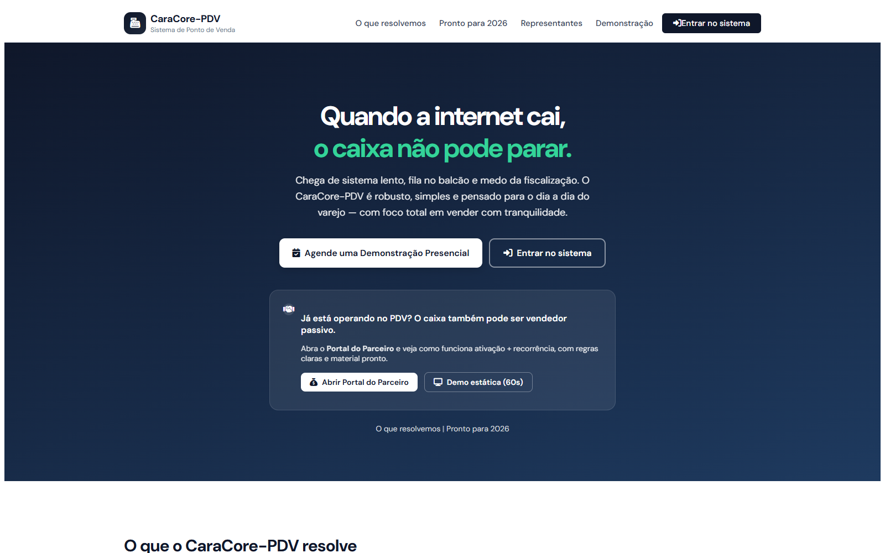
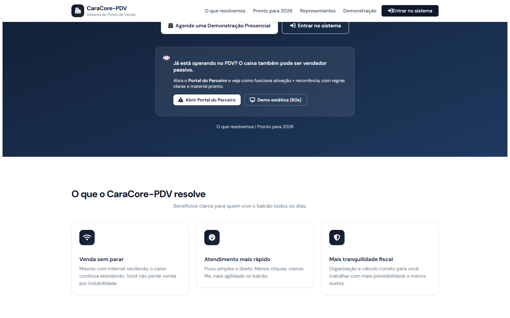
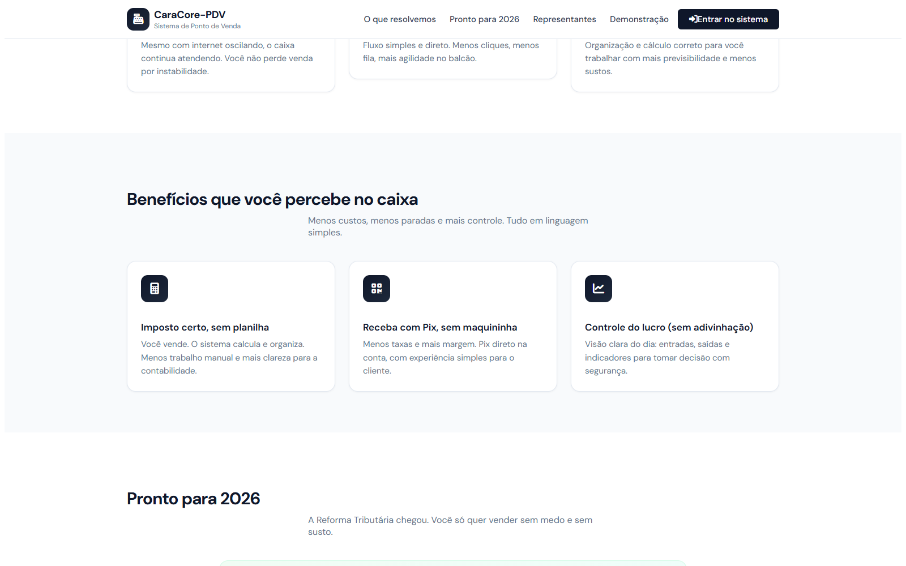
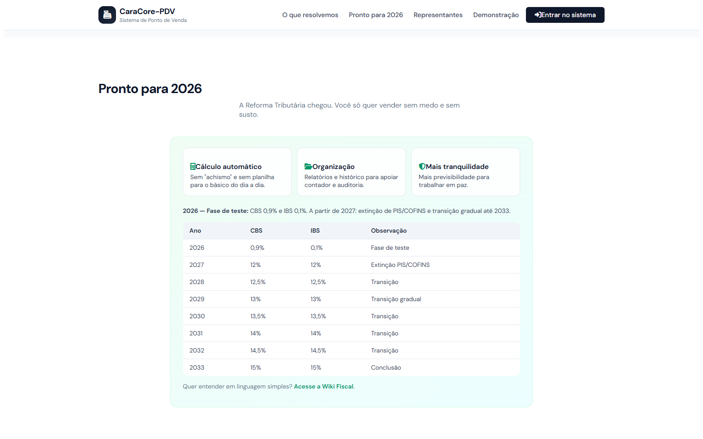
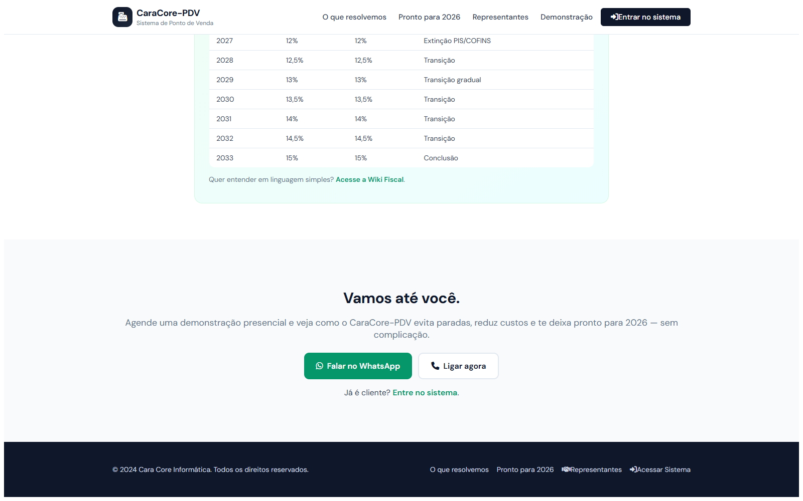

Guia operacional em HTML com capturas de tela para implantação segura do PDV.
Banco SQLite Flyway Rollback testadoExecute os comandos abaixo e confirme Python e Maven centralizados.
& D:\\dev\\.venv\\Scripts\\python.exe --version
& D:\\dev\\.mvn\\activate-maven-env.ps1
mvn --version
Crie backup do SQLite antes de qualquer alteração.
cd D:\\dev\\caracore-pdv
$timestamp = Get-Date -Format "yyyy_MM_dd_HHmmss"
Copy-Item .\\data\\caracore-pdv.db ".\\backups\\caracore-pdv_backup_$timestamp.db"
Use o orquestrador Python para validar pré e pós-upgrade.
& D:\\dev\\.venv\\Scripts\\python.exe .\\scripts\\upgrade\\run_upgrade_and_validate.py ^
--db-path .\\data\\caracore-pdv.db ^
--backup-dir .\\backups ^
--report-file .\\upgrade_validation_report.txt

Se houver qualquer falha crítica, execute rollback imediato:
& D:\\dev\\.venv\\Scripts\\python.exe .\\scripts\\upgrade\\rollback_from_backup.py ^
--backup-dir .\\backups --latest ^
--db-path .\\data\\caracore-pdv.db --force